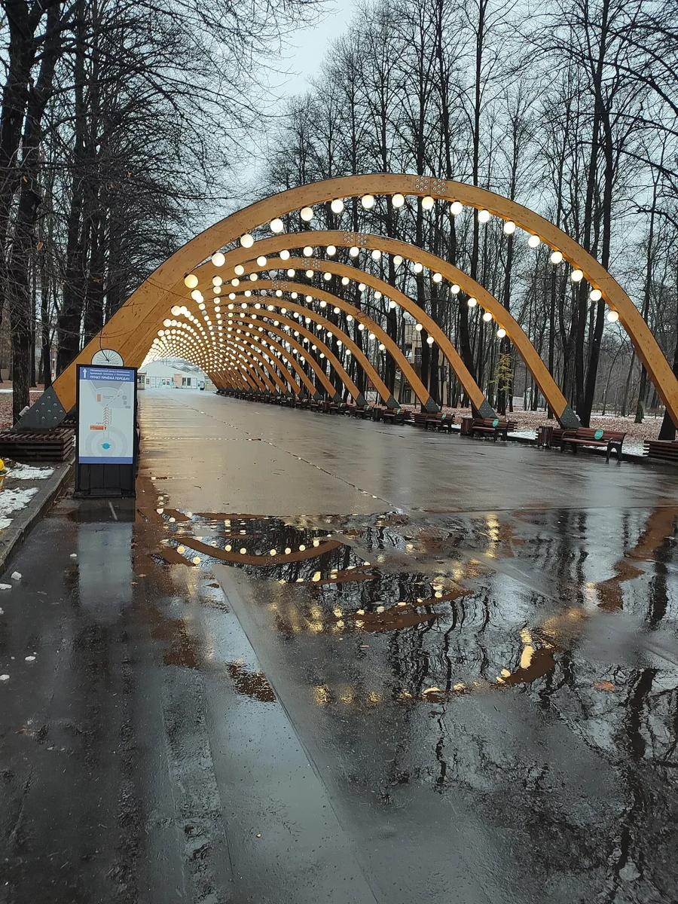
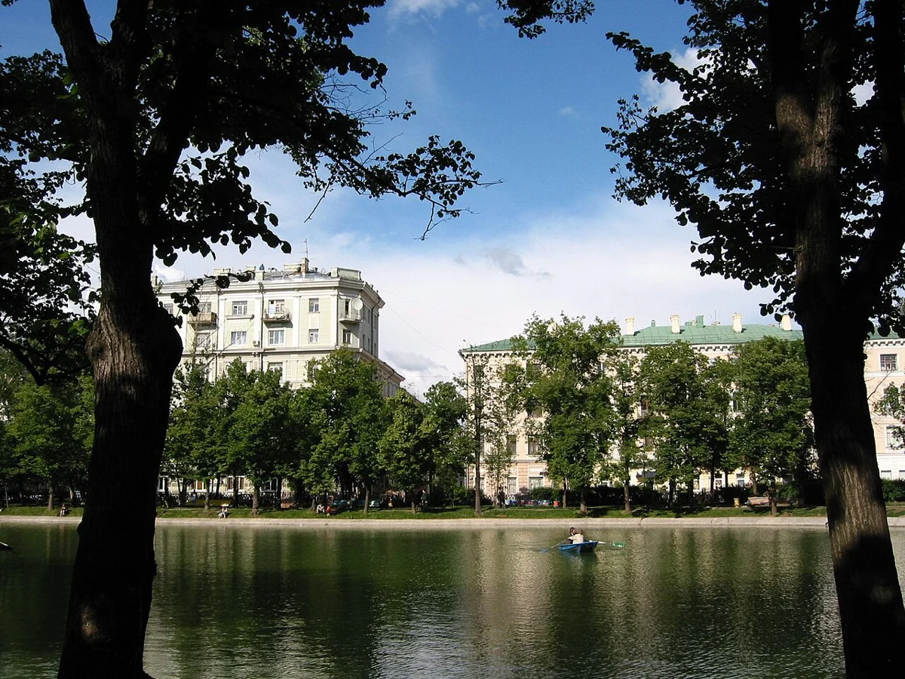

Знакомые улицы. Личные воспоминания.Открой город и собери свою прогулку.
Для открытия интерактивной карты включи JavaScript в браузере.
Мы помним города через людей. Лавочку, на которой познакомились. Двор, где научились кататься на велосипеде. Дорогу, по которой ходили в школу.
ДВОР собирает эти воспоминания на карте. Одно место, один человек, один эпизод — и город становится ближе.
Первая коллекция — шесть личных историй о трёх местах в Сокольниках. Читай воспоминания, находи знакомые места и собирай свою прогулку. Фотографии показывают места и их окрестности; это не снимки описанных событий.